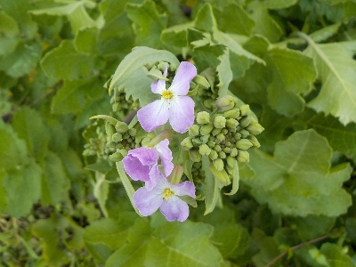
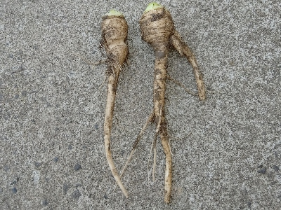
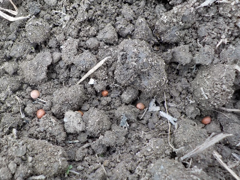
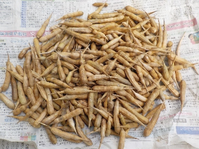
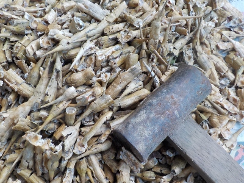

実生の大根の花が咲いています。
2025/04/12

花が咲いたせいか？大根の水分が減って固くなっています。
食べれるうちにドンドン食べて消費するようにしています。
2025/04/12

花が咲いたせいか？大根の水分が減って固くなっています。
食べれるうちにドンドン食べて消費するようにしています。
2025/02/02

辛み大根なのでちょっと変わった形をしています。
実生なので個体によっていろいろ変化があるのかと思ったんですが、大きい小さいはありますが見た目も味もほぼ同じでした。
沢山タネをまいたので沢山育っていますが、薬味の大根ってあんまり食べないですね。なので普通にお味噌汁に入れて食べたりしています。
2024/10/06

タネが大量にあるので、とっても密に筋蒔きしました。
沢山間引いたのが食べれるといいな。
まだまだタネが大量にあまっているけど、そんなに食べれないので残りは来年用にしようかな。
2024/08/31

大量の大根のタネです。サカからタネを手で取り出そうとしましたが、硬くてできませんでした。

カナズチでガンガンたたいて、サヤを破壊してタネを取り出しました。
サヤはボロボロですが、タネはきっと生きているんでしょう。これだけ大量にあるので、発芽率が低くても何の問題もないでしょう。
大根のタネを収穫します。